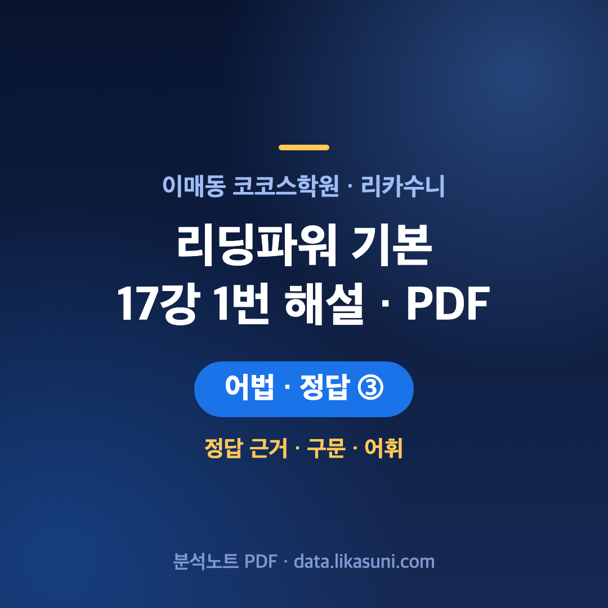
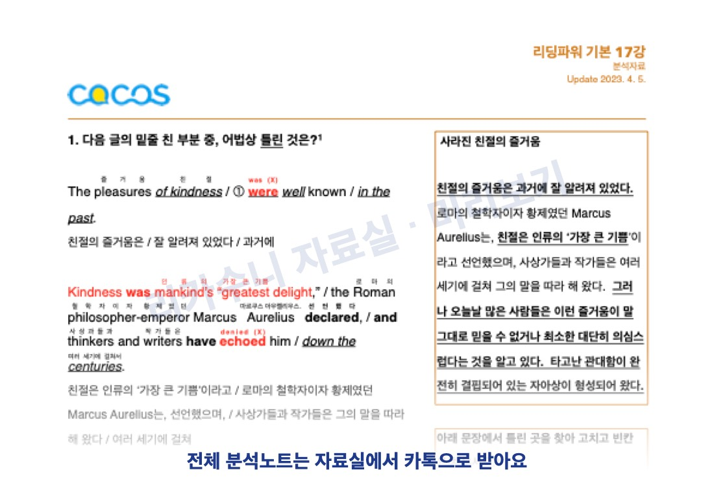

리딩파워 기본 17강 1번 해설이에요. (어법상 틀린 것 · 정답 ③ · 관계대명사 what 과 that 구별)
정답 근거, 나머지 번호가 맞는 이유, 구문, 어휘를 정리했고 분석노트 pdf 받는 곳은 글 아래에 있어요.
안녕하세요, 이매동 코코스학원 리카수니 원장입니다.
학생 요청으로 만든 분석노트를 바탕으로 정리했어요. 지문은 교재에 있으니 교재를 펴 놓고 함께 보세요.
· 교재: 리딩파워 기본 17강 1번
· 유형: 밑줄 친 부분 중 어법상 틀린 것
· 정답: ③ (what → that)
친절의 즐거움은 과거엔 '인류의 가장 큰 기쁨'으로 잘 알려져 있었지만, 오늘날 많은 사람은 그 즐거움을 믿기 어렵거나 의심스럽다고 여긴다는 글이에요.
타고난 관대함이 완전히 결핍된 자아상이 만들어졌다는 흐름이에요.
· ③ 앞은 '주어 An image of the self + has been created' 로 이미 문장이 끝났어요.
· what 은 선행사를 포함한 관계대명사라 created 의 목적어 자리처럼 쓰여야 하는데, created 는 수동태라 목적어가 필요 없어요.
· 뜻으로도 the self(자아)를 꾸미는 관계절이어야 하니, 관계대명사 that 으로 고쳐야 해요.
· ① were → 주어가 복수 The pleasures (of kindness 는 꾸밈말)
· ② incredible → find + 목적어 + 형용사 보어 (믿기 어려운)
· ④ to believe → appear to do (~하는 것 같다)
· ⑤ that → believe 의 목적어 that 절이 and 로 이어진 것
어법 문제는 밑줄 앞에서 문장이 이미 끝났는지(주어+동사 완성) 먼저 보세요. 끝났으면 what 은 올 수 없어요.

1) 관계대명사 what (선행사 포함) vs that (선행사 있음)
→ An image of the self has been created that is utterly lacking in natural generosity (관계절이 길어 뒤로 간 형태)
2) find + 목적어 + 형용사 보어 (literally incredible)
3) appear to do / believe 뒤 that 절 여러 개 나열
4) as a species (하나의 종으로서), apparently unlike ~ (겉보기에는 ~와 달리)
· kindness 친절
· mankind 인류
· delight 기쁨
· philosopher-emperor 철학자이자 황제
· declare 선언하다
· echo (남의 말을) 따라 하다, 되풀이하다
· down the centuries 여러 세기에 걸쳐
· literally 말 그대로 (literate 읽고 쓸 수 있는 / literary 문학의 / illiterate 문맹의)
· incredible 믿기 어려운
· suspect 의심스러운
· utterly 완전히 (= entirely, completely, wholly, totally)
· lacking 결핍된
· generosity 관대함
· deep down 마음속 깊은 곳에서
· hostile 적대적인
· self-seeking 이기적인
· sympathy 동정심
분석노트에 '틀린 곳 고치고 빈칸 채우기' 문제(정답 포함)와 요지 한 문장(In the past, many people appreciated the pleasures of kindness, but today it is considered unreliable.)을 넣어 두었어요.
literally incredible 부분은 학교 내신(영작·어휘 변형·문장 넣기)에서도 나온 적이 있는 자리예요.
끊어 읽기·해석·어법·서술형 문제가 정리된 PDF 는 리카수니 자료실에서 카카오 로그인 후 카톡으로 받을 수 있어요.
리딩파워 기본 다른 강·번호도 요청할 수 있어요.
▶ 분석노트 요청하기 (리카수니 자료실)
https://data.likasuni.com/notes/#note-req
※ 출처: 리딩파워 기본 17강. 지문 원문과 전체 해석은 싣지 않았어요.
분당 이매동 코코스학원은 초등·중등·고등 영어와 수학을 가르쳐요.
리딩파워·모의고사·내신 대비가 궁금하시면 편하게 문의해 주세요.
· 홈페이지: https://www.cocosedu.co.kr/
· 주소: 경기 성남시 분당구 판교로 476 2층